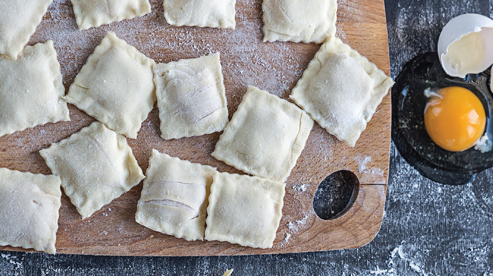

Ravioles Caseros

La palabra raviolli hace referencia a todo tipo de pasta rellena que comúnmente se prepara en forma cuadrada.
Los ravioles son una pasta delgada que envuelve a un relleno y que después de hierven y se sirven con una salsa o caldo.
Los rellenos son tan diferentes que van desde la ricotta,
verduras hasta carnes y varían según la región.
Ingredientes
- 500g. de harina
- 4 yemas
- 1 cdita. de sal
- ¼ de taza de agua tibia
- 1 cda. de aceite de oliva
Preparacion
- Cocina la pasta con agua suficiente para que se hidrate y no se pegue. Siempre multiplica la cantidad de pasta por diez de agua: 200g de pasta en 2 litros de agua.
- Cuando el agua de la pasta comience a hervir, agrega la sal. Utiliza 1 gramo de sal por cada litro de agua.
- Después de agregar la sal al agua, incorpora la pasta. Asegúrate de que el agua hierva en todo momento, aún con la pasta dentro, y mueve constantemente.
- ¿Cuánto tiempo debes dejarla? Sólo sigue las instrucciones del paquete, pero toma en cuenta que la pasta seguirá cociéndose cuando agregues la salsa, así que retírala del fuego un minuto antes de lo que sugieren las instrucciones.
- Escurre la pasta, sin enjuagarla y agrégala a un sartén con la salsa que vayas a utilizar. Saltéala durante un minuto moviendo constantemente.